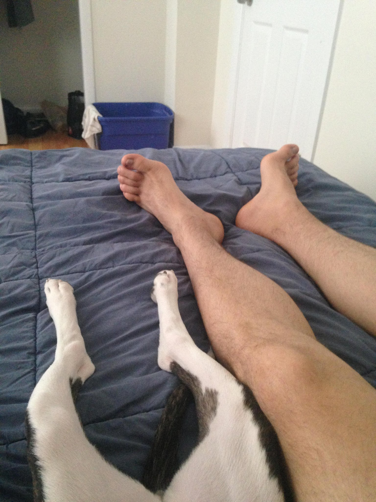

Hello all,
So this is a tradition that my mother has been doing for many many years and that I have come to find myself itching to pick up. Don’t worry though, my holiday letter will be objectively worse than the listings of some crazed woman trapped with a tyrannical cat. My mother was foolish enough to raise myself and my brothers to an age where we could buy fireworks, alcohol, and cable television legally. But, somewhere over the years this early ritual rubbed off on me. Hope you enjoy the read, even if it is worse.
Last year I left Dayton, Ohio for Philadelphia, Pennsylvania. I packed up my bags and moved into a cockroach infested apartment in Chinatown (never eat food that comes from around 11th and Arch, pro-tip). Less than two weeks later, I was able to move into the place I am still at now. I did not know it at the time, but the man I ended up living with would become one of my dear friends, and would introduce me to an even better friend (for the two that are reading, I just ranked you).
Watching a stranger microwave their brand new iPhone
In the summer I travelled to Bermuda, and was able to celebrate Cup-Match. Highlights from this trip are as follows: bikinis, Amstel Light and Twisted Tea, bioluminescent algae, poached eggs and mimosas, Cricket(…?), watching a stranger microwave their brand new iPhone, assigning everyone an animal spirit that starts with the first letter of their name, watching a good friend die then come back to life with only minor brain bleeding (he’s engaged now!).
For Thanksgiving, ironically, we had as many Canadians attend as we did ‘Muricans. My grandfather’s highlight of our surprise visitors from North of the Border was “the one who put his fork at the top of the plate of turkey, and slid it all on his plate”. Everyone else’s favourite part was my grandfather’s “corn-squeezins.”
Like the majority of my generation, I have taken up rock climbing and have found a lot of pleasure in the practice thereof. Most of the friends I’ve made while climbing have always let me down.
It was in May of this past year that I surprised Natalie (3 years now) with a ten second snapchat depicting a small pit-mix with the caption “meet the latest addition.” 6 months later and we still have Professor Juliette Henrietta Wagstaff, Dogtorate in Osteology from Canis Cannes, living with us. She has been a energetic, kind dog with a distinct affection for swimming, cuddling, and pooping on the kitchen floor when the dishwasher is running. Natalie’s mom thinks she is ugly.

To celebrate her completion of her masters and the union of two of our dear friends, Natalie and I flew off to LA. The wedding for Eva and James was gorgeous, taking place at the Rancho Santa Anna Botanic Garden. The after party was able to be held under the stars, we got to meet many many characters from the bride and groom's families, and Natalie even got to be included in the "people who have been to prison" photo! After the festivities died down, Nat and I had two extra days in LA. They were spent eating "concrete ice cream" and Mexican cuisine, hiking Mount Baldy, and swimming in the Pacific Ocean.
This past summer I received a further responsibility as a “tech lead” (valley mumbo jumbo) from my employer (RJMetrics.com/about). The company itself has over tripled in size since I started. Even with the crazy amounts of hours I end up putting in (because I honestly enjoy it), I still have time to make things like bicycle-frame tables, various prints, and NBA draft predictors. In this next year I hope to find more time for reviving my musical musings, and my attempts at “art.”
As far as the people in my life go: Charley (youngest, tallest brother) is doing a radio show now which is actually pretty great! He visited this past summer in Philly and was a pleasure to have around. I’m still sorry for him that he got stood up on a date after I recommended him a coffee shop in Philly. Bryan (middle, shorter brother) worked for NASA (I still cannot believe those words are actually in a sentence together), and is applying for PhD programs abroad (again, in a sentence). My mother (Susan) is still insane, but loved. Her cat is like her parents: alive, but distorting reality into visions of their own grandeur. The Canadian half of our family (my mother’s boyfriend of almost a decade’s family) is doing quite well. Luckily for Bryan, Charley, and myself, they are spitting out babies left and right, so Susan (who is literally referred to as “Grandpa Susan” by their family) is appeased. Natalie is also doing very well. Her visa arrived safe and sound, she is decompressing from two very intense years of grad school, is working on brand strategy for museums and cultural institutions (and figuring out her professional dreams), and is baking a hell of a lot of bread (she totally did not write that). She also made her first Lego kit at the age of 23...
There will be more to come, but it’ll have to wait till I see you in person. As always, to those of you who are my friends, you know who you are.
Cheers, Alex